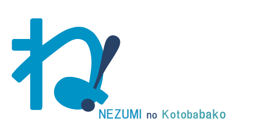

「ね！」をクリックするとメインページへ戻ります
逆に
件名：逆に 宛先：はんごうすいはん (8年/06/15 PM5:20)
件名：逆に 宛先：はんごうすいはん (8年/06/15 PM5:20)
あるVtuberが、「横動画をさくっとあげられる技術力がないとだめですか？」といっていて、最初は意味が分からなかったのですが、 Vtuberにとって動画を投稿することは配信することよりずっと面倒だということを知って衝撃を受けました。 自分にとっては配信のほうが数百倍だるいです。まず、OBSの設定がだるいです。毎回、音が出るかでないか問題に遭遇するような気がします。 それに、配信をするということは生放送、失敗は許されないわけで、事前に何を言うのかたくさん考えないといけないじゃないですか。 中には天才で、何を言うのか考えなくてもできる人がいるのかもしれませんが、自分には正直難しいです。これが意外でした。